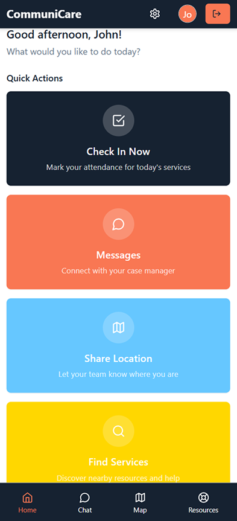

A Product Design Story
When policies disconnect
the most vulnerable
In 2023, San Diego's new encampment policies created an unexpected crisis. This is the story of how we designed technology to maintain human connection when traditional systems failed.
9,300+
People Displaced
50%
Lost Phone Access
Jan-May 2025
Design Timeline

